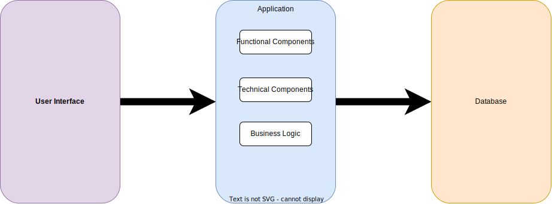
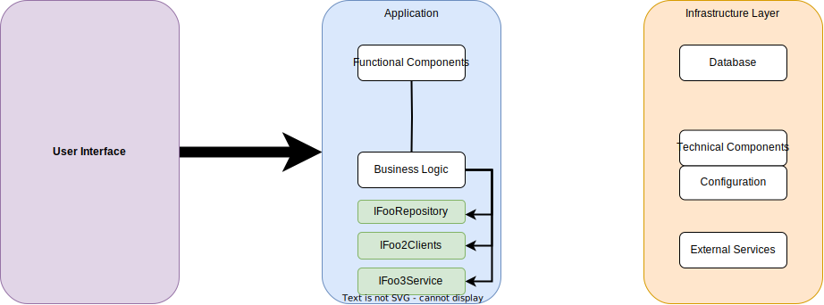
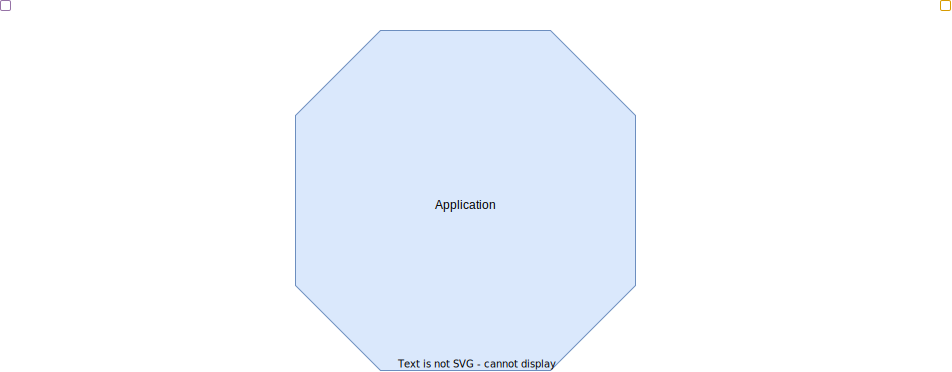
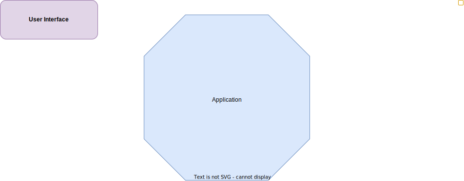
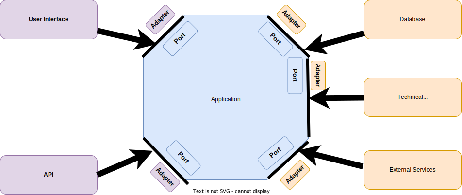
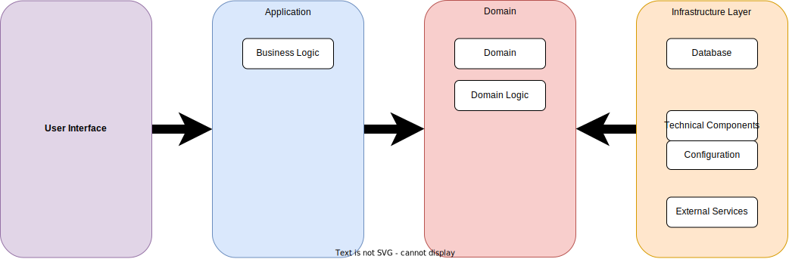
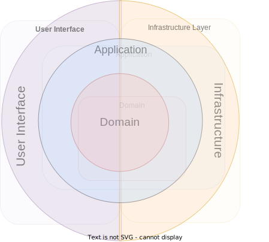
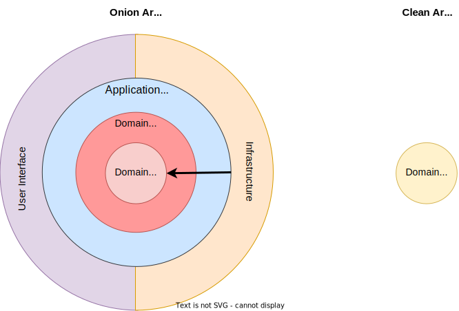

1 Monat?
6 Monate?
1 Jahr?
N Jahre?
Let’s talk about ..
"Wie hängen Zwiebeln, Adapter und Qualität zusammen?"
Author: Dirk Richter
Version: 0.111
Date: 2024
Bilder generiert mit Midjourney und Dall-E
Diagramme generiert mit DrawIo und PlantUml
Software-Lebenszyklus
'Ruhe in Frieden'
Initiale Entwicklung
Anforderungsänderungen
Neue Anforderungsänderungen
Wartung/Service
Lebensende EoL
Lebensdauer?
Lebensdauer??
Verlängerung der Lebensdauer
Skalierbarkeit und Flexibilität:
Verwende eine modulare Architektur und folge Designprinzipien wie SOLID, um Deine Codebasis sauber zu halten.Regelmäßige Code-Reviews:
Verbessere die Wartbarkeit durch frühzeitiges Erkennen und Beheben von Problemen.Automatisierte Tests und kontinuierliche Integration:
Sorge für hohe Wartungsfreundlichkeit, indem Probleme frühzeitig im Entwicklungsprozess erkannt werden.Leistungsüberwachung:
Verwende Tools zur kontinuierlichen Überwachung und Verbesserung der Leistungseffizienz.APIs und modularer Aufbau:
Sorge für Kompatibilität und Übertragbarkeit, indem standardisierte Schnittstellen und modulare Komponenten verwendet werden.Dokumentation und Schulung:
Führe eine gründliche Dokumentation und biete Schulungen an, um eine hohe Wartbarkeit und Anpassungsfähigkeit zu gewährleisten.
Verlängerung der Lebensdauer (ISO 25010)
Wartbarkeit:
Sorgt für einfache Aktualisierungen, Erweiterungen und Fehlerbehebungen.Zuverlässigkeit:
Erhält das Vertrauen der Benutzer und die Systemintegrität über einen längeren Zeitraum aufrecht. Performance-Effizienz:
Stellt sicher, dass das System wachsende und wechselnde Lasten bewältigen kann.Sicherheit:
Schützt das System vor sich entwickelnden Bedrohungen und gewährleistet die Einhaltung von Vorschriften.Kompatibilität:
Gewährleistet, dass das System mit neuen Technologien und anderen Systemen integriert werden kann.Portabilität:
Erleichtert die Migration auf neue Plattformen oder Umgebungen, wenn sich die Technologie weiterentwickelt.
Gehe zur nächsten Lektion ⇒
Architektur
Qualitätsmerkmale
(ISO 25010)
Was ist ISO/IEC 25010?
Die ISO/IEC 25010 Norm ist ein internationaler Standard, der Kriterien zur Bewertung und Sicherstellung der Softwarequalität definiert. |
Verlängerung der Lebenszeit durch ISO 25010
Wartbarkeit(Maintainability):
Gewährleistet Aktualisierungen, Erweiterungen und Fehlerbehebungen.Verlässlichkeit(Reliability):
Erhält das Vertrauen der Benutzer und die Systemintegrität über einen längeren Zeitraum.Leistungseffizienz(Performance Efficiency):
Gewährleistet, dass das System wachsende und wechselnde Lasten bewältigen kann.Sicherheit(Security):
Schützt das System vor sich entwickelnden Bedrohungen und gewährleistet die Einhaltung von Vorschriften.Kompatibilität(Compatibility):
Gewährleistet, dass das System kompatibel mit Systemen ist.Übertragbarkeit(Portability):
Erleichtert die Migration auf andere Umgebungen, wenn sich die Technologie weiterentwickelt.
Wartbarkeit (Maintainability)
Die Wartbarkeit gewährleistet, dass das System leicht geändert, korrigiert oder verbessert werden kann.
Zuverlässigkeit (Reliability)
Die Zuverlässigkeit stellt sicher, dass das System unter bestimmten Bedingungen gleichbleibende Leistungen erbringt, was für eine langfristige Nutzung unerlässlich ist.
Leistungseffizienz (Performance Efficiency)
Die Leistungseffizienz wirkt sich auf die Skalierbarkeit und die Leistung der Anwendung unter verschiedenen Bedingungen aus, was für die Verlängerung ihrer Nutzungsdauer entscheidend ist.
Kompatibilität (Compatibility)
Die Kompatibilität ist entscheidend für die reibungslose Interaktion und Integration der Anwendung mit anderen Systemen und Technologien während ihrer gesamten Lebensdauer.
Portabilität (Portability)
Die Portabilität ermöglicht den Betrieb der Anwendung in verschiedenen Umgebungen, was ihren Lebenszyklus erheblich verlängern kann.
Qualitätsmerkmale für Architektur Stile
Je nach Architektur Stil werden Architektur Merkmale mehr oder weniger erfüllt.
Gehe zur nächsten Lektion ⇒
Drei Schichten Architektur
(Regeln)
Allgemeine Regeln
Separation of Concerns:
Jede Schicht sollte einen eigenen Fokus auf eine spezifische
Verantwortlichkeit haben, um Modularität und Wartbarkeit
gewähren zu können.Lose Kopplung:
Jede Schicht sollte so unabhängig wie möglich von den anderen
Schichten sein.Hohe Kohäsion:
Innerhalb jeder Schicht sollten die Komponenten eng miteinander
verbunden sein und ähnliche Aufgaben erfüllen.Skalierbarkeit:
Jede Schicht sollte unabhängig skaliert werden können.
Vorteile
Klar und verständlich:
Entwickler verstehen das System und können es leicht
entwickeln.Ordnung:
Die Aufteilung in drei Schichten (Präsentation, Anwendung,
Daten) sorgt für eine klare Struktur und erleichtert die
Organisation des Codes.
Nachteile
*Was sind die Nachteile?*
Go to the next lesson ⇒
Drei Schichten Architektur
"Accidental Architecture"

Go to the next lesson ⇒
Big Ball of Mud
"Ein Big Ball of Mud ist ein planlos strukturierter, ausufernder, schlampiger, mit Klebeband und Bindedraht zusammengehaltener Spaghetti-Code-Dschungel. Derartige Systeme weisen eindeutige Anzeichen von ungehemmtem Wachstum und ständigen Behelfsreparaturen auf."
(1997)
— Brian Foote und Joseph Yoder
— Brian Foote und Joseph Yoder
Gehe zur nächsten Lektion ⇒
Three Layer Architecture
(Issues)
Go to the next lesson ⇒
Three Layer Architecture
(Reconstruction Part 1)

Einführung Infrastrukture Layer
Umzug Datenbank
Umzug technischer Komponenten
Umzug Zugriff auf externe Dienste

Dependency Inversion Principle
Schlüsselaspekte der Dependency Inversion Principle (Robert C. Martin)
|
SOLID Principles
Das "Dependency Inversion Principle" ist Teil der SOLID Prinzipien |
SOLID Principles (Robert C. Martin)
|
Go to the next lesson ⇒
Hexagonal Architecture
Ports and Adapters
(Reconstruction Part 2)
Einführung von "Ports" und "Adapter"





Go to the next lesson ⇒
Hexagonal Architecture
Ports and Adapters
(Visual Studio Structure)
MyHexagonalApp │ ├───src │ ├───MyHexagonalApp.Api │ │ └───Controllers │ ├───MyHexagonalApp.Application │ │ ├───Services/Usecases │ │ └───Ports │ │ ├───Input │ │ └───Output │ ├───MyHexagonalApp.Domain │ │ ├───Entities │ │ ├───Interfaces │ │ └───Services │ └───MyHexagonalApp.Infrastructure │ ├───Adapters │ ├───Data │ └───Repositories │ ├───tests │ ├───MyHexagonalApp.Api.Tests │ ├───MyHexagonalApp.Application.Tests │ ├───MyHexagonalApp.Domain.Tests │ └───MyHexagonalApp.Infrastructure.Tests │ └───docs
Go to the next lesson ⇒
Comparison Hexagonal Architecture vs
Three Layered Architecture
Separation of Concerns (1/5)
| Three-Layer Architecture | Hexagonal architecture |
|---|---|
|
|
Testability (2/5)
| Three-Layer Architecture | Hexagonal architecture |
|---|---|
Unittests schwierig zu entwickeln
| Unittests einfacher zu entwickeln * wegen Isolierung der Geschäftlogik via Ports * weil Mocks einfacher zu entwickeln sind. |
Flexibility and Extensibility (3/5)
| Three-Layer Architecture | Hexagonal architecture |
|---|---|
Anpassungen an einem Layer hat in der Regel eine Anpassung in den anderen Layern zur Folge. | Adapters ermöglichen Anpassungen, ohne andere Layer umfangreich anpassen zu müssen. |
Maintainability (4/5)
| Three-Layer Architecture | Hexagonal architecture |
|---|---|
Mit der Zeit wächst der Business Layer mit seinen fachlichen und technischen Anforderungen, so dass die Wartbarkeit stetig abnimmt. | Durch klare Abgrenzung Layer und Verantwortlichkeiten gibt es klare Strukturen, sauberen Code und eine hohe Wartbarkeit. |
Scalability (5/5)
| Three-Layer Architecture | Hexagonal architecture |
|---|---|
Changes in scalability requirements might necessitate significant architectural changes. | Due to its decoupling of business logic from external systems, scalability improvements can be localized to specific adapters without disrupting the core logic. |
Adaptability to Change (5/5)
| Three-Layer Architecture | Hexagonal architecture |
|---|---|
Tends to be rigid when dealing with changes, especially if they impact the structure of business logic or data access patterns. | DFacilitates adaptability, as changes in business rules or external interfaces (e.g., replacing a third-party service) are confined to peripheral systems (adapters) without modifying the core business logic. |
Gehe zur nächsten Lektion ⇒
Onion Architecture
(Reconstruction Part 3)
Einführung Begriff "Domain"


Four principles
|
Go to the next lesson ⇒
Onion Architecture
(Visual Studio Structure)
MyOnionApp │ ├───src │ ├───MyOnionApp.Api │ │ └───Controllers │ ├───MyOnionApp.Application │ │ ├───Interfaces │ │ └───Services │ ├───MyOnionApp.Domain │ │ ├───Entities │ │ ├───Interfaces │ │ └───Services │ └───MyOnionApp.Infrastructure │ ├───Data │ ├───Repositories │ └───Services │ ├───tests │ ├───MyOnionApp.Api.Tests │ ├───MyOnionApp.Application.Tests │ ├───MyOnionApp.Domain.Tests │ └───MyOnionApp.Infrastructure.Tests │ └───docs
Go to the next lesson ⇒
Comparison Hexagonal Architecture vs
Three Layered Architecture
Separation of Concerns (1/5)
Advantages of Onion Architecture over Three-Layer Architecture Dependency Rule: Onion: In the Onion Architecture, dependencies point inward, meaning the core domain models are free of external dependencies. This leads to a design where the core logic is not influenced by infrastructure concerns. Three-Layer: Dependencies in the Three-Layer Architecture are not always well-defined, and there’s a risk that the business logic layer may depend on the data access layer directly. Testability: Onion: Since the core domain and application layers are isolated from infrastructure concerns, it becomes easier to unit test business logic without requiring database access or other infrastructure setups. Three-Layer: The business layer often depends on the data access layer, which can make unit testing harder because it can involve setting up and tearing down database instances. Maintainability: Onion: With the core business logic being isolated, changes in the infrastructure layer (e.g., switching databases) do not impact the core logic, enhancing maintainability. Three-Layer: Changes at lower layers can sometimes ripple through higher layers, making maintenance more challenging. Separation of Concerns: Onion: Promotes a clear separation of concerns where the domain model is isolated from the technical details of data access and presentation. Three-Layer: While it does promote separation of concerns to a degree, it is not as strict as the Onion Architecture, leading to potential violations. Flexibility and Scalability: Onion: Allows for a more flexible and scalable design since different parts of the system can evolve independently. For example, you can replace the UI or database without affecting the core domain logic. Three-Layer: Less flexible because layers can be tightly coupled, and changes in infrastructure can require significant changes across other layers. Focus on Domain-Driven Design (DDD): Onion: The architecture is well-suited for Domain-Driven Design as it emphasizes the domain model’s centrality and keeps it isolated from the technical concerns. Three-Layer: Can be adapted for DDD, but the focus on domain isolation is not as strong, leading to potential entanglement with technical concerns. :icons: font
Clean Architecture
(Reconstruction Part 4)

Clean Architekture
Clean Architekture |
Go to the next lesson ⇒
Clean Architecture
(Visual Studio Structure)
MyCleanArchitectureSolution │ ├── Core │ ├── Entities │ │ └── Customer.cs │ ├── Interfaces │ │ └── ICustomerRepository.cs │ └── Core.csproj │ ├── Application │ ├── UseCases │ │ └── GetCustomerUseCase.cs │ └── Application.csproj │ ├── Infrastructure │ ├── Data │ │ └── CustomerRepository.cs │ └── Infrastructure.csproj │ ├── WebAPI │ ├── Controllers │ │ └── CustomerController.cs │ ├── Startup.cs │ └── WebAPI.csproj │ └── Docs
Gehe zur nächsten Lektion ⇒